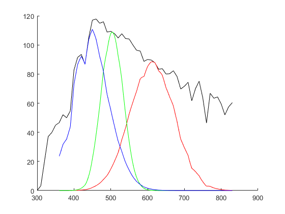

CIE_Lab
Navigate to: Home | Alphabetic list | Grouped list | Source code: CIE_Lab.m
Computes CIELAB L*, a*, b* values from XYZ tristimulus values
Contents
Syntax
rv = CIE_Lab(XYZ, XYZn)
Input Arguments
- XYZ: A struct with scalar real fields X, Y, Z: the tristimulus values for which Lab values shall be computed
- XYZn: A struct with scalar real fields X, Y, Z: the tristimulus values of the "reference white": the brightest diffuse white in the scene from which XYZ is taken
Output Arguments
- rv: A struct with scalar real fields L, a and b. L is the lightness, which should be between 0 (totally black) and 100 (the reference white). a > 0 for reddish, a < 0 for greenish hues, and b > 0 for yellowish, b < 0 for bluish hues.
Algorithm
Applies the CIELAB formulas (8.3) to (8.11) according to section 8.2.1. of CIE 015:2018
See also
CIE1931_XYZ, CIE_Luv, CIE_upvp
Usage Example
function ExampleCIE_Lab() white = CIE_Illuminant('D65'); red = MultiplySpectra(white, GaussSpectrum(360:830, 620, 60)); green = MultiplySpectra(white, GaussSpectrum(360:830, 505, 30)); blue = MultiplySpectra(white, GaussSpectrum(360:830, 430, 60)); white.XYZ = CIE1931_XYZ(white); red.XYZ = CIE1931_XYZ(red); green.XYZ = CIE1931_XYZ(green); blue.XYZ = CIE1931_XYZ(blue); show1 = @(name, Lab) fprintf('%s L = %g, a = %g, b = %g\n',name, Lab.L, Lab.a, Lab.b); XYZn = white.XYZ; show1('white', CIE_Lab(white.XYZ, XYZn)); show1('red', CIE_Lab(red.XYZ, XYZn)); show1('green', CIE_Lab(green.XYZ, XYZn)); show1('blue', CIE_Lab(blue.XYZ, XYZn)); figure(); hold on; plot(white.lam, white.val,'k'); plot(red.lam, red.val,'r'); plot(green.lam, green.val,'g'); plot(blue.lam, blue.val,'b'); PlotCIExyBorder('ColorFill',true); title(''); scatter(white.XYZ.x, white.XYZ.y,'kx'); scatter(red.XYZ.x, red.XYZ.y,'kx'); scatter(green.XYZ.x, green.XYZ.y,'kx'); scatter(blue.XYZ.x, blue.XYZ.y,'kx'); end
white L = 100, a = 0, b = 0 red L = 79.729, a = 23.715, b = 98.2935 green L = 66.2237, a = -108.214, b = 4.65561 blue L = 49.5674, a = 15.5897, b = -77.6118